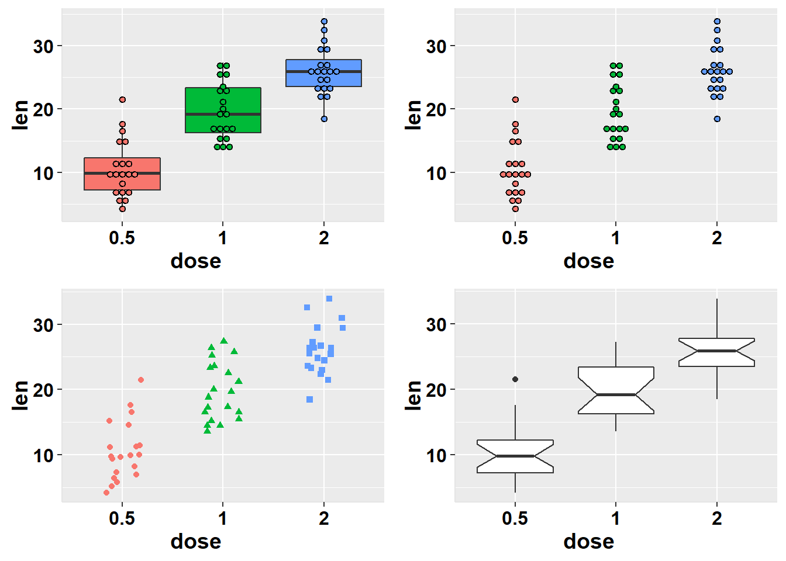
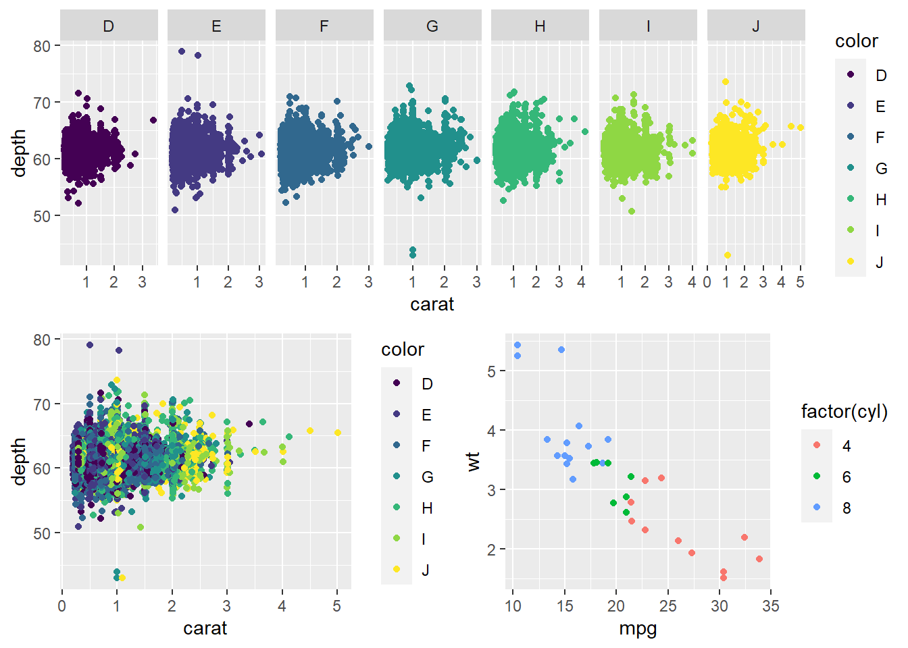
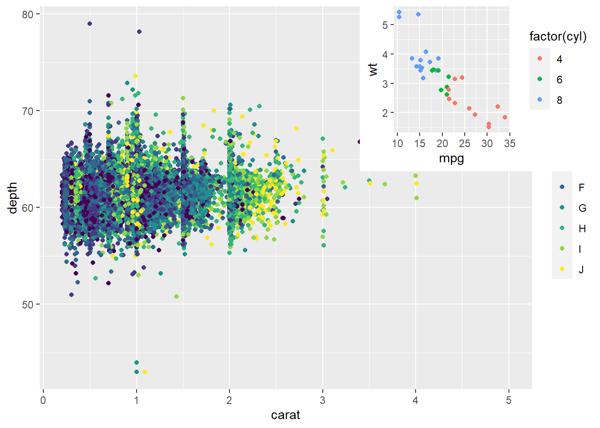
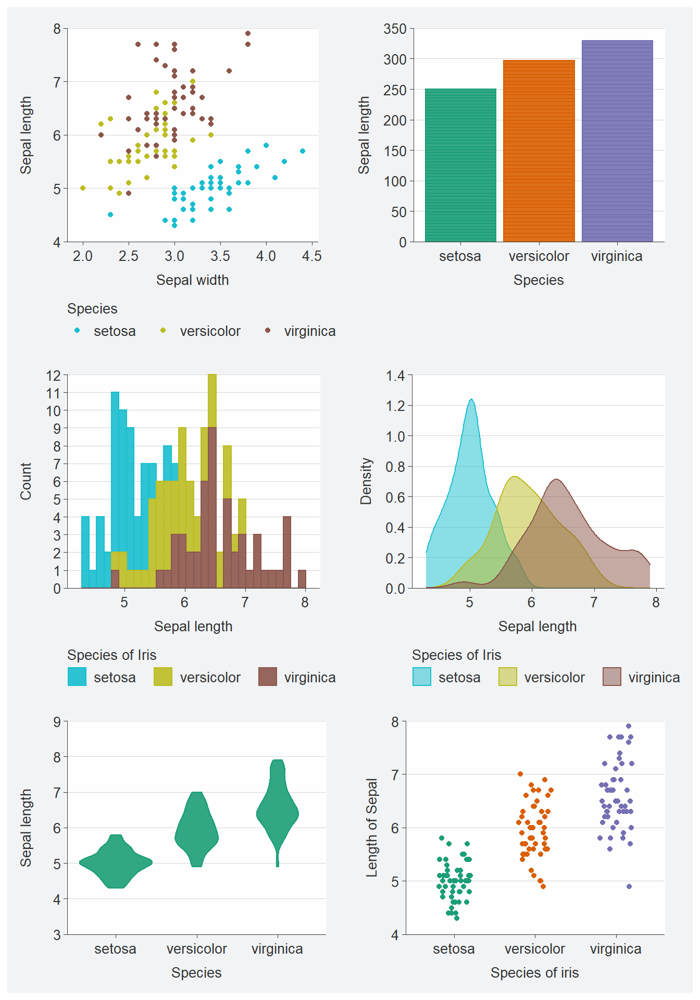

15 multiplot
15.1 easyGgplot2
remotes::install_github(“kassambara/easyGgplot2”)
df <- ToothGrowth # 自定义框图与中心点图
as_tibble(df)# A tibble: 60 × 3
len supp dose
<dbl> <fct> <dbl>
1 4.2 VC 0.5
2 11.5 VC 0.5
3 7.3 VC 0.5
4 5.8 VC 0.5
5 6.4 VC 0.5
6 10 VC 0.5
7 11.2 VC 0.5
8 11.2 VC 0.5
9 5.2 VC 0.5
10 7 VC 0.5
# … with 50 more rowsCode
plot1<-ggplot2.boxplot(data=df, xName='dose',yName='len',
groupName='dose', addDot=TRUE,
dotSize=1, showLegend=FALSE) # 带中心点图的自定义点图
plot2<-ggplot2.dotplot(data=df, xName='dose',yName='len',
groupName='dose',showLegend=FALSE) # 带有中心点图的自定义带状图
plot3<-ggplot2.stripchart(data=df, xName='dose',yName='len',
groupName='dose', showLegend=FALSE) # Notched box plot
plot4<-ggplot2.boxplot(data=df, xName='dose',yName='len',
notch=TRUE) #在同一页上的多个图表
ggplot2.multiplot(plot1,plot2,plot3,plot4, cols=2)
15.2 gridExtra
df <- ToothGrowth # 自定义框图与中心点图
as_tibble(df)# A tibble: 60 × 3
len supp dose
<dbl> <fct> <dbl>
1 4.2 VC 0.5
2 11.5 VC 0.5
3 7.3 VC 0.5
4 5.8 VC 0.5
5 6.4 VC 0.5
6 10 VC 0.5
7 11.2 VC 0.5
8 11.2 VC 0.5
9 5.2 VC 0.5
10 7 VC 0.5
# … with 50 more rowsCode
plot1<-ggplot2.boxplot(data=df, xName='dose',yName='len',
groupName='dose', addDot=TRUE, dotSize=1,
showLegend=FALSE) # 带中心点图的自定义点图
plot2<-ggplot2.dotplot(data=df, xName='dose',yName='len',
groupName='dose',
showLegend=FALSE) # 带有中心点图的自定义带状图
plot3<-ggplot2.stripchart(data=df, xName='dose',yName='len',
groupName='dose',
showLegend=FALSE) # Notched box plot
plot4<-ggplot2.boxplot(data=df, xName='dose',yName='len',
notch=TRUE) #在同一页上的多个图表
grid.arrange(plot1,plot2,plot3,plot4, ncol=2) 15.3 grid
Code
#####先将图画好，并且赋值变量，储存#####
a <- ggplot(mtcars, aes(mpg, wt, colour = factor(cyl))) + geom_point()
b <- ggplot(diamonds, aes(carat, depth, colour = color)) + geom_point()
c <- ggplot(diamonds, aes(carat, depth, colour = color)) + geom_point() +
facet_grid(.~color,scale = "free")
########新建画图页面###########
grid.newpage() ##新建页面
pushViewport(viewport(layout = grid.layout(2,2))) ####将页面分成2*2矩阵
vplayout <- function(x,y){
viewport(layout.pos.row = x, layout.pos.col = y)
}
print(c, vp = vplayout(1,1:2)) ###将（1,1)和(1,2)的位置画图c
print(b, vp = vplayout(2,1)) ###将(2,1)的位置画图b
print(a, vp = vplayout(2,2)) ###将（2,2)的位置画图a
Code
#dev.off() ##画下一幅图，记得关闭窗口15.3.1 子母图viewplot
Code
library(grid)
a <- ggplot(diamonds, aes(carat, depth, colour = color)) + geom_point()
b <- ggplot(mtcars, aes(mpg, wt, colour = factor(cyl))) + geom_point()
subvp <- viewport(x = 0.8, y = 0.8, width = 0.4, height = 0.4)
a
print(b,vp=subvp)
Code
#dev.off()15.4 patchwork
Code
p1 <- gg_point(data = iris,
x = Sepal.Width,
y = Sepal.Length,
col = Species)
p2 <- gg_bar(data = iris,
x = Species,
y = Sepal.Length,
col = Species,
stat = "identity",
pal = brewer.dark2(3))
p3 <- gg_histogram(data = iris,
x = Sepal.Length,
col = Species,
col_title = "Species of Iris",
y_breaks = scales::breaks_width(1))
p4 <- gg_density(data = iris,
x = Sepal.Length,
col = Species,
col_title = "Species of Iris")
p5 <- gg_violin(iris,
x = Species,
y = Sepal.Length,
y_include = c(3, 9), # y轴范围
pal = brewer.dark2(3))
p6 <- gg_jitter(iris,
x = Species,
y = Sepal.Length,
col = Species,
y_title = "Length of Sepal",
x_title = "Species of iris",
position = position_jitter(width = 0.2, height = 0, seed = 123),
pal = brewer.dark2(3))(p1+p2)/(p3+p4)/(p5+p6)# 拼图`stat_bin()` using `bins = 30`. Pick better value with `binwidth`.